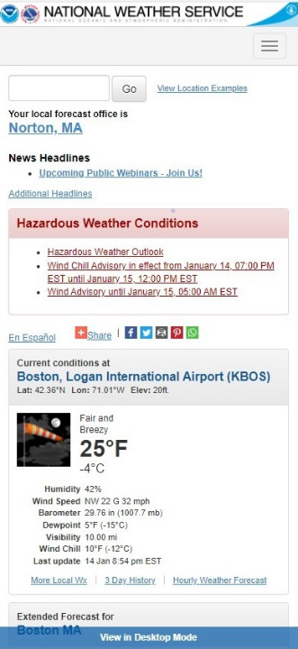
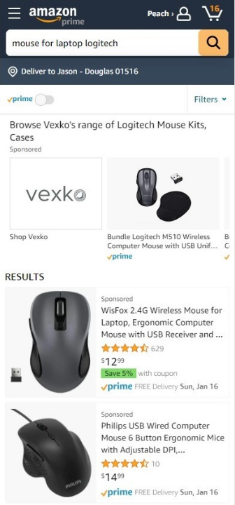

Alignment
National Weather Service (NOAA)
National Weather Service: Boston, MA I believe this is an example of alignment because the sections and text are in neat columns the same distance from the left.
Contrast
Amazon
Amazon: Logitech Mouse I feel this is a good example of contrast. The black/white combination is easy to read and navigate.
White Space and Clean Design
Khan Academy
Khan Academy: Tauriel's ProjectsI think this is a good example of white space and clean design because it is laid out simply. It is easy to find what you are looking for.